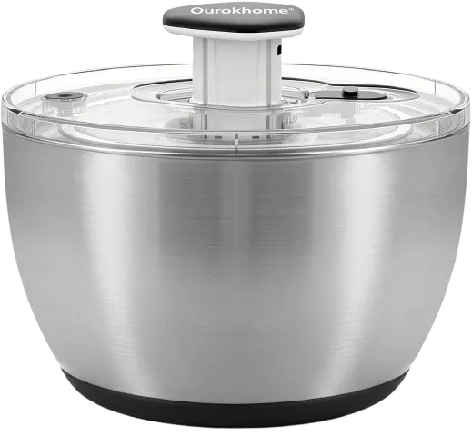
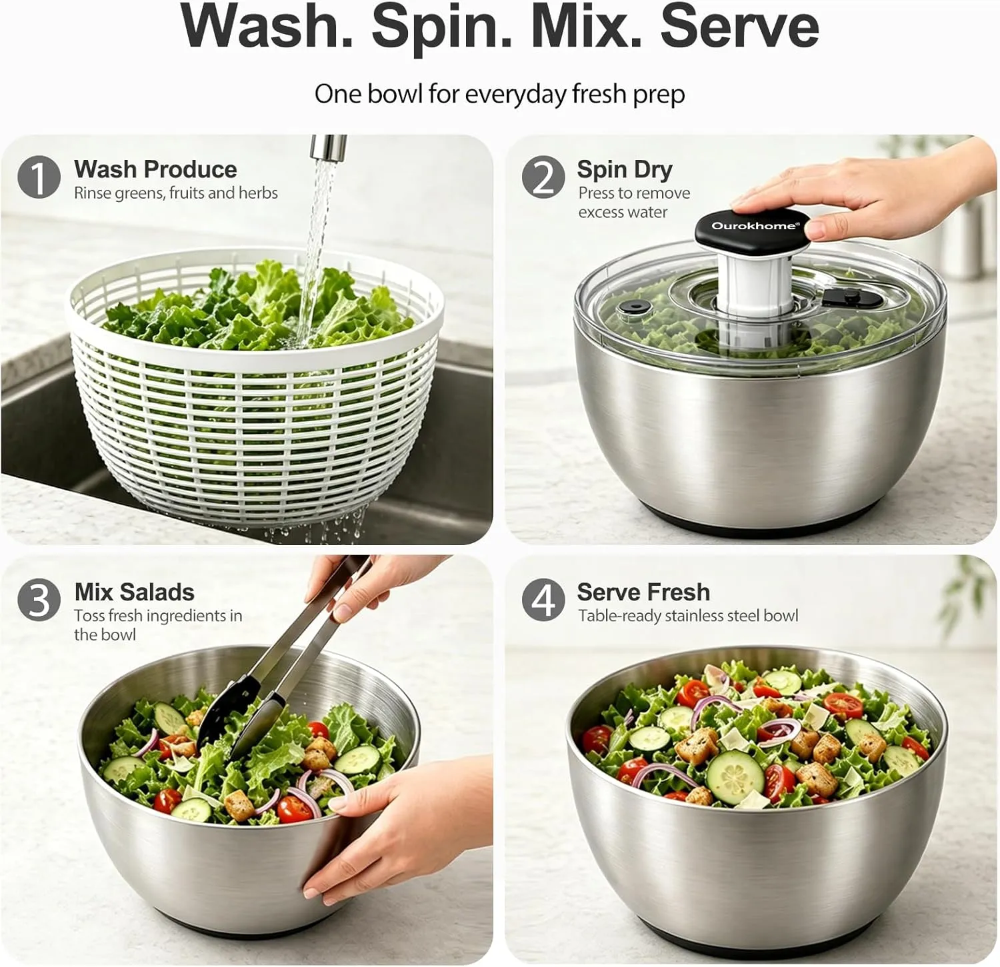
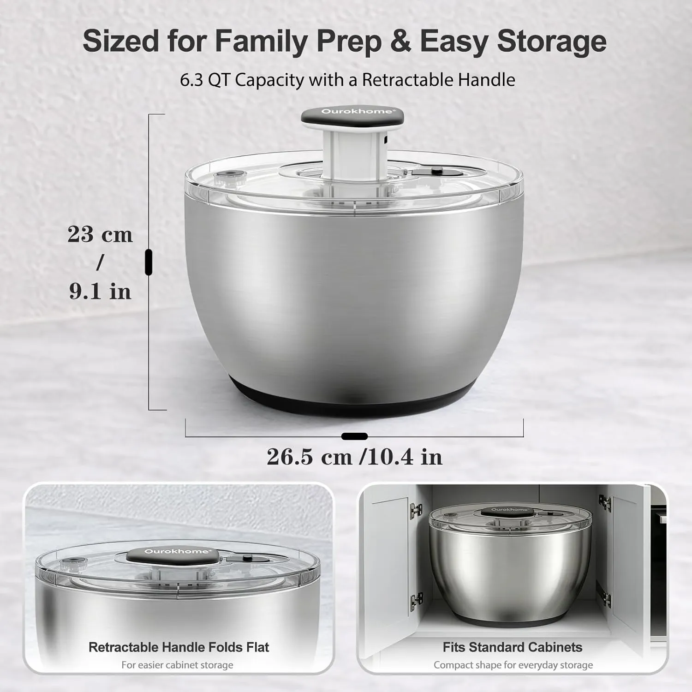
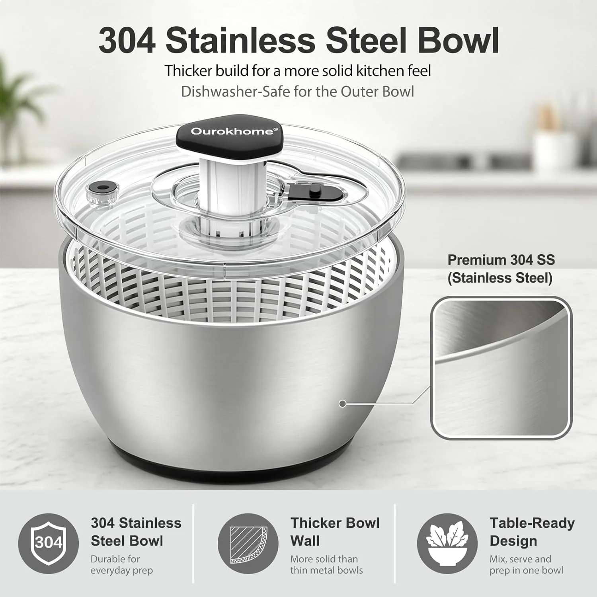
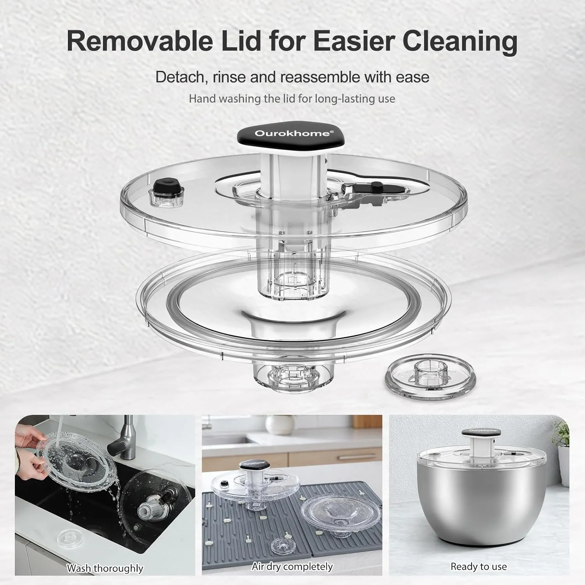
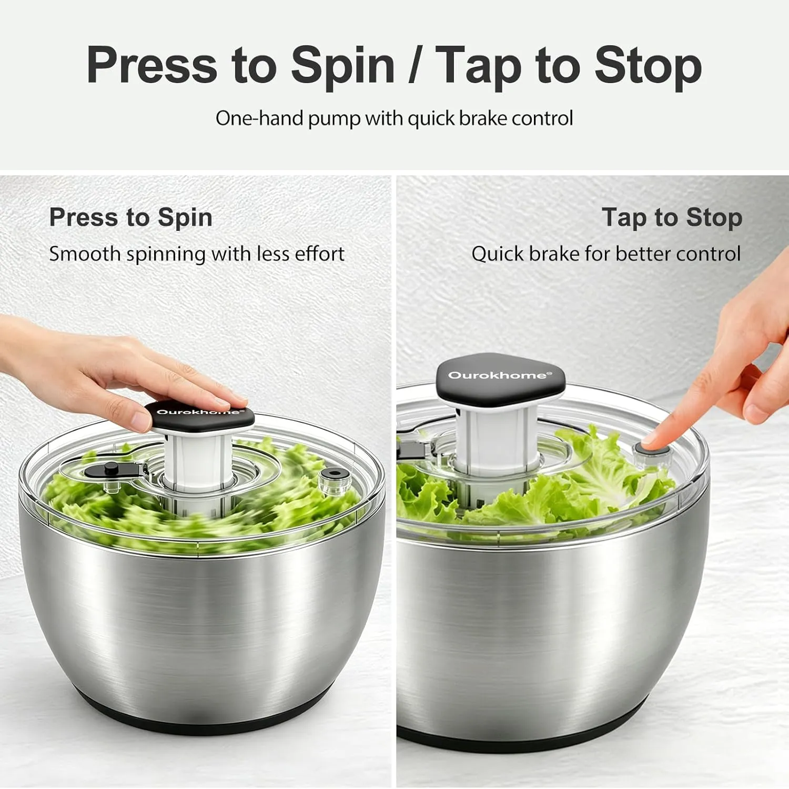

The salad tool that makes homemade greens feel less like a chore.
You buy the lettuce, rinse it, shake it over the sink, and still end up with watery greens that make the whole bowl feel sad. The Ourokhome stainless steel salad spinner is built for the part of meal prep people skip: getting produce dry enough to actually taste crisp.
Wet lettuce is one of those tiny kitchen problems that ruins the whole meal.
A homemade salad should feel fresh, not watery. But when greens stay damp after rinsing, dressing slides off, herbs wilt faster, and meal prep containers get soggy before lunch.
A salad spinner solves a boring problem in a practical way: wash the produce, spin out the extra water, then use the stainless steel bowl to mix or serve. Fewer steps, fewer bowls, better texture.

Your salad is only as good as the greens underneath it.
Most people blame the dressing or the lettuce. A lot of the time, the real issue is water left behind after washing.
Crisp greens start before the dressing.
Think about a busy Sunday meal prep. You wash romaine, spinach, herbs, or berries, then try to dry everything with paper towels. It works a little, but it is slow, messy, and never really gets the moisture out.
That leftover water matters. It dilutes dressing, makes lettuce feel limp, and can turn tomorrow’s lunch into a soggy container. A spinner gets that extra water away from the food fast, which helps salads taste cleaner and hold up better.
For families trying to eat more fresh food at home, this is the kind of tool that removes friction. You are more likely to make the salad when the prep does not feel like a small production.

Big enough for real salads, not just a handful of lettuce.
Small salad spinners can feel pointless when you are cooking for more than one person. You end up washing greens in batches, then the tool sits in the cabinet because it feels like one more step.
The 6.3 QT size makes more sense for family salads, weekly fresh prep, herbs, and produce you actually use during the week. It gives the lettuce room to move, which helps the spin do its job.
The retractable handle matters too. Large kitchen tools are only useful if they are not annoying to store. A handle that folds flat makes it easier to slide the spinner into a standard cabinet when it is not being used.
- Useful for romaine, spring mix, kale, herbs, berries, and rinsed vegetables.
- Works well for Sunday meal prep and weeknight side salads.
- Better fit for families than tiny spinners that need repeated batches.

Not just lettuce.
The best kitchen tools earn their space by doing more than one job.
Wash and dry romaine, spinach, spring mix, or chopped lettuce before packing lunches.
Spin parsley, cilantro, dill, basil, or mint after rinsing so herbs do not turn wet and clumpy.
Use gentle spinning for rinsed berries or small fruits when you want less water sitting in the bowl.
Build bigger bowls for dinner without using a separate mixing bowl and serving bowl.
Dry greens help dressing cling better, which makes salads taste more finished at home.
Wash, spin, mix, and serve with fewer tools spread across the counter.
The stainless steel bowl is the difference you notice every day.
Plastic salad spinners can work, but they often feel like storage containers pretending to be prep tools. The stainless steel outer bowl gives this one a more solid, table-ready feel.
That matters when you want one bowl to handle more of the job. Rinse the produce in the inner basket, spin it dry, then use the outer bowl for mixing or serving. It looks better on the table and feels less disposable than a thin plastic bowl.
The non-slip base also helps during spinning. Nobody wants a large bowl sliding across the counter while trying to get dinner ready.

What makes this spinner practical.
The value is not one flashy feature. It is the way the parts remove little annoyances from fresh prep.
One-hand pump helps remove excess water from lettuce, herbs, fruits, and vegetables.
Tap to stop the spin quickly instead of waiting for the bowl to slow down on its own.
Large enough for family salads and weekly fresh prep with fewer batches.
Helps reduce sliding and wobbling while spinning on the countertop.
A tool is only useful if cleanup is not worse than the problem.
The removable lid is important because salad spinners can trap moisture in awkward places. Being able to detach, rinse, and air dry the lid makes it easier to keep the tool fresh between uses.
That is especially helpful if you use it for more than lettuce. Herbs, berries, and chopped produce all leave tiny bits behind. A lid that separates makes the cleaning process less annoying.
After cleaning, let the pieces air dry fully before storing. That keeps the spinner ready for the next grocery run or meal prep day.

Press to spin. Tap to stop. Keep dinner moving.
The one-hand pump is simple, which is exactly the point. You press down to spin the basket and tap the brake when the greens are dry enough.
That kind of control is useful when you are not doing a perfect recipe moment. You are making tacos, grilling chicken, packing lunches, or trying to get a side salad on the table before everyone is hungry.
A good salad spinner should disappear into the routine. This one fits that role because the motion is easy, the bowl feels stable, and the process does not require extra effort.

A strong pick if you want crisp salads without extra kitchen drama.
If you buy fresh greens but hate the soggy prep part, this salad spinner earns its cabinet space. It is especially useful for families, meal prep, healthy lunches, and anyone trying to make better salads at home without using half the kitchen.
View on AmazonBefore adding it to your kitchen.
Is a salad spinner actually worth it?
If you eat salads, herbs, berries, or meal-prepped greens often, yes. It removes water faster than towels and helps produce feel fresher.
Can it be used as a serving bowl?
Yes. The stainless steel outer bowl has a cleaner table-ready look, so you can mix and serve in the same bowl.
Is it too big for a small kitchen?
It is a larger spinner, but the retractable handle helps with storage. Check your cabinet space first if your kitchen is tight.
What foods can I spin besides lettuce?
Herbs, berries, spinach, chopped greens, rinsed vegetables, and some delicate produce can work well when handled gently.
How should I clean it?
The stainless steel outer bowl is dishwasher safe. The lid should be hand washed and air dried completely.
Who is this best for?
Families, meal preppers, healthy lunch packers, and anyone who wants fresh greens without soggy salad texture.